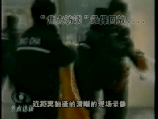
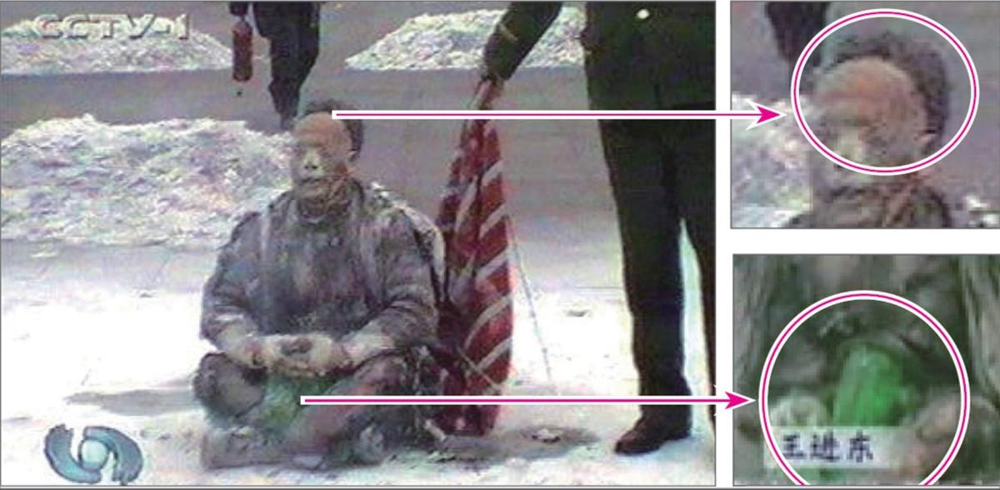

您看过关于“预言”的书吗？
中国被称为神州，中国文化有“神传文化”之称，这在全世界是独一无二的。预言是神传文化的重要组成部分，中国许多朝代都留下了传世预言，对历史有着惊人的准确预测。比较著名的预言包括：周朝的《乾坤万年歌》，汉代诸葛亮的《马前课》，唐代李淳风的《推背图》，宋代邵雍的《梅花诗》，明代刘伯温的《烧饼歌》等。在外国比较著名的预言有：圣经《启示录》，法国诺查丹玛斯留下的《诸世纪》，韩国的《格庵遗录》等。众多的预言，出自不同的文化和地区，跨越不同的时代，却都预言了中国的朝代更迭、中共的产生与灭亡，及人类此时将有大劫之忧，预言了即将在中国发生的一件惊天动地的大事：天要灭中共，以及天灭中共时其追随者将被一同诛灭的可怕惨景！
亿年藏字石现天机
2002年6月，在贵州省平塘县掌布乡发现了2.7亿岁的“藏字石”，五百年前崩裂的巨石断面内惊现六个排列整齐的大字“中国共产党亡”，其中那个“亡”字特别的大。中国的各路地质专家经实地考察后一致认为，这“藏字石”上未发现任何人工的痕迹，乃天然形成，堪称世界奇观。国内多家媒体报道，但都隐去“亡”字。“藏字石”的图片还被赫然印在贵州“藏字石”风景区的门票上。（见下图）

冥冥之中有天意。史料上也有关于“藏字石”的记载：秦始皇36年，有坠星下东郡，至地为石，其石刻曰“始皇帝死而地分”。果然，秦始皇死后，秦二世即位不久，秦朝就灭亡了，准确地应了天意。千百年来的中国，在要出大事之前就一定有奇事发生，老天或以瑞兆示吉，或以凶相警世。今天，贵州平塘的“藏字石”是否也在向人们预示着天机呢？《易》曰：“天垂象，见吉凶”，由此看来，亿年古石崩裂，突现“中国共产党亡”，非同小可，天意昭然。中共恶贯满盈，坏事干尽，天真要灭中共了。
《九评共产党》掀起退党潮
2004年11月19日，海外媒体大纪元新闻网开始发表系列社论——《九评共产党》。

《九评共产党》是第一次系统阐述共产党邪恶本质的旷世之作，极短时间内便在海内外引起了强烈反响，被迅速翻译成三十多种语言在世界各地发行传播，被称作是“一本震撼全球华人的书，一本正在解体共产党的书”，并由此引发了势不可挡的全球退党、退团、退队——“三退”大潮。截至2018年12月，已经超过三亿各界人士声明退出中共党、团、队组织，而且正以平均每天十多万人的速度滚雪球似的递增……退党大潮在中国产生了巨大的影响。这是中华民族的精神觉醒，是对中国人的心灵救赎。当人们认清中共恶党的本质后，就会猛醒退党保命。古语云：“君子不立危墙之下。”退出中共邪党，是顺应天意，是选择善良、远离邪恶，不做邪党的殉葬品，也为自己选择了光明的未来。
为什么灭中共是天意？
中共建政以来，周期性的政治运动迫害了中国一半以上的家庭，造成了8000万中国同胞丧生，这一数字超过了两次世界大战死亡人数的总和。接二连三的各种血腥政治运动，镇反、三反、五反、肃反、反右、荒诞的大跃进和相继而来的三年大饥荒、反右倾、四清、文革、“六四”镇压学生、迫害法轮功，等等等等，无数善良人成了中共的虐杀对象。中共血债累累，罪恶滔天，必遭天谴；再看当今的中国社会，贤良受辱，小人猖獗，世风日下，道德沦丧、信义无存，黄赌毒假泛滥成灾。工人失业，农民失地，贪官横行，官商勾结，警匪一家，民怨沸腾……中共祸国殃民已经到了如此地步，人神共愤，上天还能容它吗？！
共产党一向与天与地与神佛为敌，宣称无神论，战天斗地。文化大革命中，消灭一切宗教，煽动老百姓砸佛像，毁寺庙。2001年初，江泽民集团一手导演“天安门自焚”假案嫁祸法轮功，用中共控制下的“一言堂”媒体愚弄不明真相的百姓，煽动群众对以“真善忍”为原则的法轮功修炼者的仇恨，而这场迫害完全是由血腥和谎言构成的。
“天安门广场自焚”真相
国际教育发展组织（IED）早在2001年8月14日的联合国会议上就提交了天安门自焚案的分析录像带，谴责江泽民集团的“国家恐怖主义行为”，并发表正式声明称：“中共当局企图以诬陷法轮功残害生命、破坏家庭来为其国家恐怖行为辩护。我们的调查表明，恰恰是中共当局对法轮功修炼者的虐杀而导致其家庭破裂，残害生命的正是中共极端残暴的酷刑、精神病院的摧残、劳改营的奴役……中共当局企图以自焚事件为证据诬陷法轮功，而我们得到的录像分析表明，整个事件是中共当局一手导演的。我们有该录像的拷贝，有兴趣者可来领取。”中共代表面对确凿的证据，没有任何辩辞。该声明已被联合国备案。

火烧后盛着汽油的塑料瓶完好翠绿。
※注：因早期播放的自焚录像被指出多处漏洞，在2001年8月中共对“自焚案”审判过程中播放的自焚录像中剪切掉了所有被指出的可疑之处。刘春玲被警察用重物击打头部倒下的镜头片段，已不见踪影。而这恰恰是不打自招，欲盖弥彰！造假背后必定是骇人的阴谋！
所有“自焚”伪案的参与者，不管他们动机如何，他们的命运都是苦涩和令人悲哀的。他们失去的，或者是自己宝贵的生命，或者是自己的道德良知。
除“天安门自焚”伪案外，2006年初又揭露出来的“中共集中营、劳教所、监狱活体摘取并盗卖法轮功学员器官和尸体牟取暴利”的罪行，其残暴程度远远超过了人类道德良知的底线，是“魔鬼的行径”、“是全人类的耻辱”、是“这个星球上前所未有的邪恶”。天良丧尽的中共邪党被天惩、解体的命运已成定局。
迫害元凶江泽民等被国际起诉 大审判在即
自2000年起，海内外法轮功学员以“群体灭绝罪、酷刑罪、反人类罪”在全球30多个国家，发起50多个刑事和民事诉讼，控告迫害元凶江泽民及其帮凶，被称为“21世纪最大的国际人权诉讼”。2012年10月30日，“清算江泽民迫害法轮大法国际组织”成立。2015年5月以来，在国内受迫害的法轮功学员及其亲属和各界民众，纷纷依法控告、起诉迫害法轮功的首恶江泽民，日益高涨的全球诉江大潮势不可挡……
“善恶到头终有报”。天惩的序幕已经拉开，中共正在走向全面崩溃，迫害者恶报连连。王立军、薄熙来、李东生、周永康、郭伯雄等曾不可一世的迫害者纷纷落马，江泽民、罗干、曾庆红等元凶和罪无可赦的迫害者被彻底清算也正在逼近。中共体制内觉醒的官员和警察，已经开始留后路并私下收集文件、保留证据，退出中共，不再参与迫害，保护法轮功学员，并向国际社会公开其他官员的犯罪证据，揭露迫害法轮功的真相，在历史巨变的关头为自己和亲人选择光明的未来。江泽民对法轮功的迫害政策已众叛亲离，穷途末路。江泽民、罗干、刘京、周永康以及所有不思悔改的恶人面临的是历史的大审判！
三退保平安
中共灭亡是必然的。历史曾经有过深刻教训，强大的罗马帝国无人可以征服，就因为罗马皇帝采用谎言、造伪证嫁祸于基督徒，借此对基督徒进行残酷迫害，结果招致天惩，国家灭亡。杀人偿命是天理，中共欠下这么大的血债，怎么能不偿还呢？那么到上天清算中共邪党的时候，作为它组成部分的党员、团员、少先队员就会成为中共的陪葬品一同毁灭。所以，人要想保平安，只有退出中共的党、团、少先队组织。
有人可能说：“我思想中早退了，我也早就不交党费了。”但那是不算数的。您知道吗？你加入党、团、队时，在血（红）旗面前发了把生命献给恶党的毒誓，就是把生命交给它了，就被打上“兽记”，就是恶党的一员，你不声明退出，就抹不掉“兽记”， 当中共被清算时，所有未声明退出、仍带有“兽记”的党、团、队员就会遭殃。
也有人可能说：“我早就超龄自动退队或者退团了，不必走形式了。”但这种所谓的自动退队、退团的形式那是人世间的中共组织形式认可的，不是神认可的。所以凡是曾经入过党、团、队等组织的人都要主动声明退出来，有行为的表示，才能除掉这么大的毒誓，神就会帮你抹掉“兽记”，您才能在天灭中共的时候保性命、保平安！
那么如何退出中共的党、团、队组织呢？只要登录海外的“大纪元”退党网站声明退出参加过的中共组织就可以了，也可找你认识的法轮功学员帮忙代理。暂时不能上网声明退出的，可将“退党（团、队）声明”张贴到适当的公共场所、或写在钱上花出，同样有效，待有条件再上网发表声明。人们用真名、小名、化名、笔名或自己认可的名字声明退出党团队都可以。因为人在做、天在看，而且神看人心，慈悲于人，广救众生，既保护人又予人方便。
古人云：宁可信其有，不可信其无。说一声“退”你毫发无损，也不费一分钱，却得到了个生命大保险，何乐而不为呢？！爱自己的家人，那么就劝父母﹑妻子﹑儿女﹑亲朋好友也都退了。在世上，没有比真理和生命更可贵的了。请用良知为自己的生命做出明智的选择！
珍惜生命 选择美好未来
朋友，请你冷静地思考一下法轮功。时至今日，中共对法轮功的血腥迫害已持续十七年，法轮功不但没有倒下，却传遍世界100多个国家和地区，使不同国度、不同民族亿万人受益。至今，法轮功获得世界各地的褒奖与支持议案、信函已超过3000项。
古语“大德曰生”，顺天保命。朋友，当您与亲友能在大灾难中平安脱险、幸存下来的时候，一定会为接受今天的建议和提醒而感到万分幸运，切勿失去这个宝贵的机缘，瞬间即逝啊！
最后祝您及家人、朋友：三退自救保平安，幸福永相伴！
主页